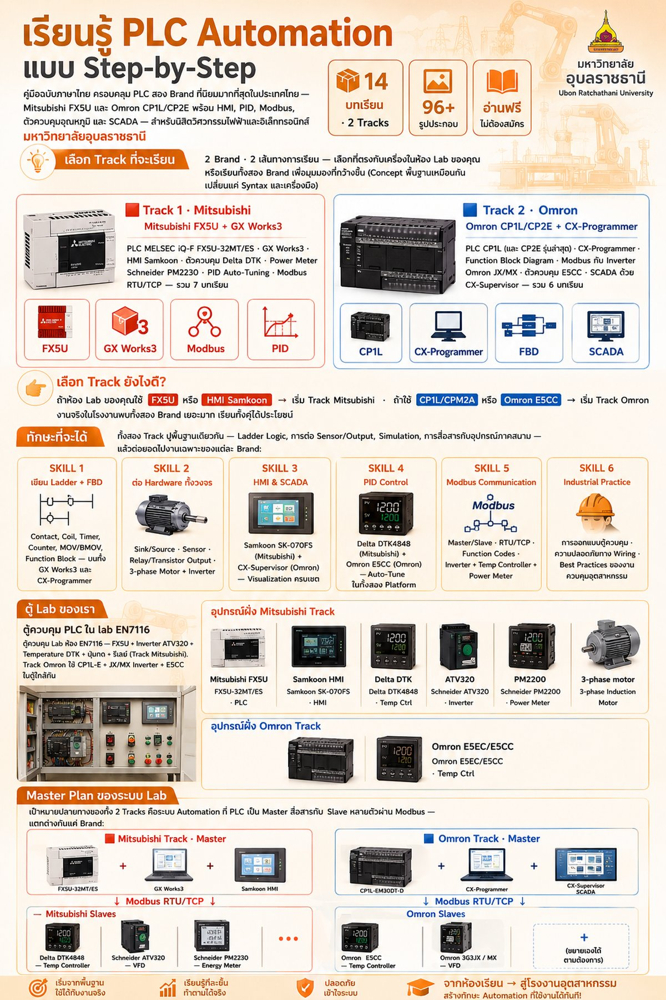
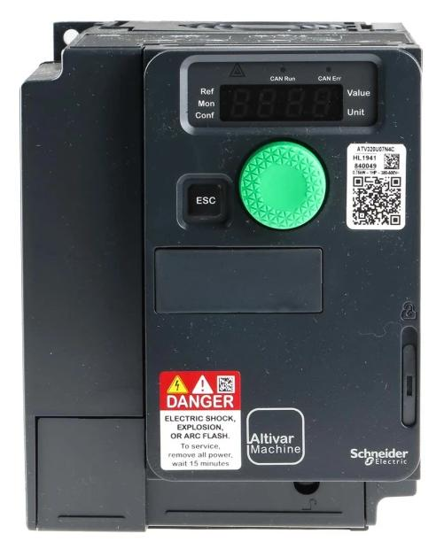
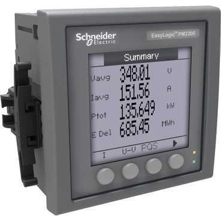
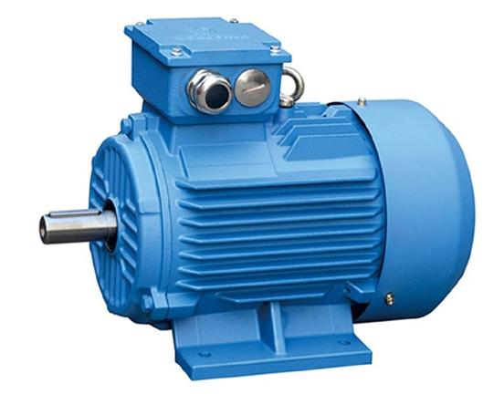

เรียนรู้ PLC Automation
แบบ Step-by-Step
คู่มือฉบับภาษาไทย ครอบคลุม PLC สอง Brand ที่นิยมมากที่สุดในประเทศไทย — Mitsubishi FX5U และ Omron CP1L/CP2E พร้อม HMI, PID, Modbus, ตัวควบคุมอุณหภูมิ และ SCADA — สำหรับนิสิตวิศวกรรมไฟฟ้าและอิเล็กทรอนิกส์ มหาวิทยาลัยอุบลราชธานี

📋 ภาพสรุปบทเรียน 2 แทร็ก (Mitsubishi + Omron) — คลิกเพื่อดูขนาดใหญ่
เลือก Track ที่จะเรียน
2 Brand · 2 เส้นทางการเรียน — เลือกที่ตรงกับเครื่องในห้อง Lab ของคุณ หรือเรียนทั้งสอง Brand เพื่อมุมมองที่กว้างขึ้น (Concept พื้นฐานเหมือนกัน เปลี่ยนแค่ Syntax และเครื่องมือ)
ทักษะที่จะได้
ทั้งสอง Track ปูพื้นฐานเดียวกัน — Ladder Logic, การต่อ Sensor/Output, Simulation, การสื่อสารกับอุปกรณ์ภาคสนาม — แล้วต่อยอดไปงานเฉพาะของแต่ละ Brand:
ตู้ Lab ของเรา

อุปกรณ์ฝั่ง Mitsubishi Track





อุปกรณ์ฝั่ง Omron Track


Master Plan ของระบบ Lab
เป้าหมายปลายทางของทั้ง 2 Tracks คือระบบ Automation ที่ PLC เป็น Master สื่อสารกับ Slave หลายตัวผ่าน Modbus — แตกต่างกันแค่ Brand:
🟥 Mitsubishi Track · Master
- FX5U-32MT/ES
- + GX Works3
- + Samkoon HMI
🟦 Omron Track · Master
- CP1L-EM30DT-D
- + CX-Programmer
- + CX-Supervisor SCADA
Mitsubishi Slaves
- Delta DTK4848 — Temp Controller
- Schneider ATV320 — VFD
- Schneider PM2230 — Energy Meter
Omron Slaves
- Omron E5CC — Temp Controller
- Omron 3G3JX / MX — VFD
- (ขยายเองได้ตามต้องการ)
ก่อนเริ่ม — สิ่งที่ต้องเตรียม
ซอฟต์แวร์
-
GX Works3
ดาวน์โหลดจากเว็บไซต์ Mitsubishi Electric — เป็น IDE หลักสำหรับเขียน Ladder/FBD/ST บน FX5U
ต้องลงทะเบียน MyMitsubishi - GX Simulator (มาพร้อม GX Works3) ใช้จำลองการทำงานของ PLC โดยไม่ต้องมี Hardware จริง — เหมาะสำหรับการเรียนรู้และทดสอบโปรแกรม
- Samkoon HMI Editor M05 ดาวน์โหลดจาก samkoon.com.cn — ใช้ออกแบบหน้าจอสำหรับ SK-070FS
- CX-Programmer (Omron) Omron Track จำเป็นถ้าจะเรียน Omron Track (O02–O07) — ดาวน์โหลด CX-One Trial + CX-Supervisor Developer Trial จาก Omron Industrial Automation
ฮาร์ดแวร์ในห้องปฏิบัติการ
| Track | รายการ | รุ่น |
|---|---|---|
| 🟥 Mitsubishi | PLC | Mitsubishi FX5U-32MT/ES |
| 🟥 Mitsubishi | HMI Touch Screen | Samkoon SK-070FS |
| 🟥 Mitsubishi | Temperature Controller | Delta DTK4848 |
| 🟥 Mitsubishi | AC Inverter | Schneider Altivar ATV320 |
| 🟥 Mitsubishi | Power Meter | Schneider PowerLogic PM2230 |
| 🟦 Omron | PLC | Omron CP1L-EM30DT-D (และ CP2E รุ่นใหม่) |
| 🟦 Omron | Temperature Controller | Omron E5CC / E5EC-QR2ASM |
| 🟦 Omron | AC Inverter | Omron 3G3JX / 3G3MX |
| ทั่วไป | Inductive Proximity | LJ18A3-8-Z/BX (NPN, NO 8mm) |
| ทั่วไป | Photoelectric Sensor | OMRON E3JK-R4M1 (Retroreflective) |
ดูเอกสารต้นฉบับทั้งหมดได้ที่ หน้าเอกสารอ้างอิง
การใช้คู่มือนี้
คู่มือเป็นเว็บไซต์ static — ไม่ต้องติดตั้งอะไร เพียงเปิด index.html
ด้วยเบราว์เซอร์ใดก็ได้ ไฟล์ทั้งหมด (PDF, วิดีโอ, รูปประกอบ) อยู่ในโฟลเดอร์
PLC project/ และ images/ ติดมาเรียบร้อย